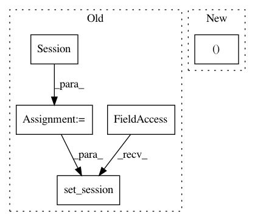

c0e9a520c944e971b0ea53a9e81142e2e6bbab64,art/attacks/universal_perturbation_unittest.py,TestUniversalPerturbation,test_krclassifier,#TestUniversalPerturbation#,106
Before Change
:return:
// Initialize a tf session
session = tf.Session()
k.set_session(session)
// Get MNIST
(x_train, y_train), (x_test, y_test) = self.mnist
After Change
:return:
// Build KerasClassifier
krc, sess = get_classifier_kr()
// Get MNIST
(x_train, y_train), (x_test, y_test) = self.mnist
In pattern: SUPERPATTERN
Frequency: 6
Non-data size: 5
Instances
Project Name: IBM/adversarial-robustness-toolbox
Commit Name: c0e9a520c944e971b0ea53a9e81142e2e6bbab64
Time: 2019-02-13
Author: beat.buesser@ie.ibm.com
File Name: art/attacks/universal_perturbation_unittest.py
Class Name: TestUniversalPerturbation
Method Name: test_krclassifier
Project Name: IBM/adversarial-robustness-toolbox
Commit Name: 28fb1d4dc48f50a45145de9fe89fa27528e10c8d
Time: 2019-03-06
Author: Maria-Irina.Nicolae@ibm.com
File Name: art/detection/detector_unittest.py
Class Name: TestBinaryInputDetector
Method Name: test_binary_input_detector
Project Name: IBM/adversarial-robustness-toolbox
Commit Name: e5e31e126ca66724826a89e7b347b4779424893c
Time: 2019-02-12
Author: beat.buesser@ie.ibm.com
File Name: art/attacks/spatial_transformation_unittest.py
Class Name: TestSpatialTransformation
Method Name: test_krclassifier
Project Name: IBM/adversarial-robustness-toolbox
Commit Name: d03644cb2140ea0c92f2360407d26a23f6e68c54
Time: 2018-11-29
Author: ambrish.rawat@ie.ibm.com
File Name: art/detection/features_unittest.py
Class Name: TestFeatures
Method Name: test_saliency_map
Project Name: IBM/adversarial-robustness-toolbox
Commit Name: d03644cb2140ea0c92f2360407d26a23f6e68c54
Time: 2018-11-29
Author: ambrish.rawat@ie.ibm.com
File Name: art/detection/features_unittest.py
Class Name: TestFeatures
Method Name: test_mean_class_dist_fv
Project Name: IBM/adversarial-robustness-toolbox
Commit Name: d03644cb2140ea0c92f2360407d26a23f6e68c54
Time: 2018-11-29
Author: ambrish.rawat@ie.ibm.com
File Name: art/detection/features_unittest.py
Class Name: TestFeatures
Method Name: test_attention_map